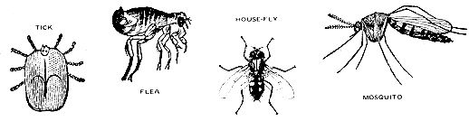

Several years ago it was possible to find advertisements similar to the following in many small farm publications circulated throughout the nation:
GUARANTEED INSECT CONTROL: Works on all injurious insects. Cheap. Easy. No sprays, dusts, or residues. Absolutely harmless to humans, livestock, pets and plants. Nothing else to buy, your first cost is your last. For kit and instructions, send $$$$ to . . .
Well now, this was just too good to be true. So the dollars were sent, and in due time a small package arrived. The instructions were simplicity itself: "Entice the offending insect to alight on the large wooden block (marked A), and then smash it with the small wooden block (marked B)."
I don't know how financially successful the perpetrator of this scheme was . . . but human nature being what it is, he probably did quite well. It is to his credit that, at least, his product was ecologically harmless . . . which is more than can be said for today's insecticide salesmen. These modern conmen would have us believe that we will all starve to death if we do not use their biocides to destroy insects and they engage in a continuous search for ever more deadly products that they say are necessary to control the more resistant pests.
It should be evident that neither of these approaches has proven effective. The old "two-block" method has certain obvious limitations and the use of chemical insecticides for over twenty-five years has resulted in little, if any, reduction in the total population of bothersome insects.
There is, however, a middle road which we can follow to control the insects that bother our homestead animals. Let's consider some of the more common of these pests and methods for their control.
To begin any insect control program it is necessary to have a positive identification of the culprit and a clear understanding of its habits, its likes, dislikes and life cycle. Armed with this knowledge it is sometimes possible to avoid the pests entirely, to discourage their attacks or to interfere with their love-life to the extent that their population declines and they are no longer a major problem. If these tactics fail, then we may have to consider the use of more drastic measures.
The life cycle of insects can be simple or complex, but always includes four stages: Egg, Larva, Pupa, Adult.
Common flies-such as houseflies, stable files and horn flies-have a rather simple life cycle. The eggs are laid in manure or rotting vegetation, hatch into larvae, pupate, and emerge as adults. The entire cycle can be completed in 10 days to 3 weeks depending on the species involved and on environmental conditions.
Horseflies and deer flies lay eggs near water and the larvae drop into the water and complete their development in the mud of shallow ponds or marshes. In some climates it takes almost a year for them to complete their development.
The screwworm fly deposits her eggs on the edges of wounds on animals. The eggs hatch in about 12 hours and the larvae burrow into the living flesh of their host. If not treated, these larvae will eventually kill the affected host animal. At one time the screwworm was the scourge of the cattle industry in the south and southwest but the pest has now been brought under control by U.S.D.A. entomologists who knew that the female screwworm mates only once but that the male mates several times. The entomologists took advantage of these traits by releasing millions of sterilized male screwworm flies into the problem areas. The resultant sterile matings have been responsible for a marked reduction in the number of these pests. Indeed, total eradication would be possible if it were not for the unavoidable migration of flies into this country from Mexico.
The maggots now seen in neglected wounds are usually the larvae of the common blowfly. These larvae do not feed on live flesh and consequently are not nearly as serious a problem as screwworms. However, they do interfere with healing and for this reason should be controlled.
The many different species of mosquitoes have somewhat dissimilar life cycles but all are dependent on stagnant water as the site for larval development. Some species are known vectors (carriers) of sleeping sickness and malaria.
Ticks are not true insects. Along with spiders, they are in a class of creatures called ARACHNIDA. Adult arachnids have eight legs as opposed to the six legs exhibited by adult insects. Tick eggs are laid on the ground and soon hatch into tiny six-legged seed ticks. The seed ticks crawl up on vegetation and transfer to any suitable host that brushes past their perch. Once on the host, the ticks gorge with blood, drop to the ground, molt and become eight-legged nymphs. The nymphs follow the same system to find a new host and after a final molt, the adult begins its quest for another victim. Some ticks spend their entire development period on one host but most of the common ones are three-host ticks, as described above. Ticks can be vectors of Rocky Mountain Spotted Fever, sleeping sickness, and tularemia (rabbit fever). Humans are susceptible to all of these diseases.
There are several management practices that can be employed to aid in the control of these pests. The primary consideration, is the elimination of breeding sites. In the case of most flies, this involves composting manure and decomposing vegetation or else spreading it out so it can dry. Mosquitoes have been known to complete a life cycle in the small amount of water found in vases of cut flowers in the home and in the water in hoof prints by a pond or stream; thus it is very important to drain all areas of stagnant water and marshy areas. This will also help reduce the numbers of horseflies and deer flies. If you have places that cannot be adequately drained and in which natural controls such as minnows or frogs are absent, the mosquito larvae can be suffocated by the application of a thin film of oil to the surface of the water.
In regions where ticks are a severe problem it is wise to exclude your animals from brushy pastures for several weeks in the spring and early summer. This avoids subjecting them to contact with the ticks at the time of peak activity.
Flies are less active at night so you may want to allow your animals access to a dark barn during daylight hours and let them graze at night.
Do everything possible to encourage natural insect predators such as cowbirds, barn swallows, martins, and the various parasitic beetles and wasps that prey on the eggs or larvae of flies. Many of these beneficial insects are available commercially and are a worthwhile investment.
Your County Extension Agent may have plans for flytraps that you can build.
Insects vary greatly in their response to repellents so their use requires a great deal of ingenuity. Many people are of the opinion that a daily allowance of vinegar, garlic, or sulfur will affect the bodily secretions of animals to the extent that they are no longer attractive to insects. If you care to try this a daily dose of 2 to 4 ounces of vinegar would be about right for a horse or cow, and it can be added directly to the feed or water. Smaller animals would get proportionately smaller doses. Powdered sulfur can be provided free-choice to large animals or mixed in their salt at the rate of approximately 3 parts sulfur to 97 parts salt. Dogs can be given one 5-grain sulfur tablet daily for each 30 pounds of body weight. Discontinue the use of sulfur if the animals develop diarrhea.
Oil of Citronella is reputed to be an effective mosquito repellent when applied to exposed areas on people. Its application on animals would probably be limited to use around the eyes and ears of horses to keep them from tossing their heads when being worked or ridden in mosquito-infested areas.
Pine tar has good insect repellent qualities but can be irritating to tissues. It's regular use should be limited to wounds and only occasional application to other places. Pine oil is also effective and is sometimes used as a vehicle for other products.
I hesitate to mention this, but there is an herb that seems to have insect repellent properties. Cannabis Sativa, or wild hemp, grows in clumps to a height of 3 to 12 feet. Cattle sometimes seek it out and lie in the shade of its thicket to escape the pestering of flies. Since the cultivation of this plant is frowned upon by some governmental agencies, it is probably best not to rely on it as your sole means of repelling flies.
Even with adequate attention to the above recommendations, some occasions are sure to arise that will require the use of a product to actually kill insects. If this becomes necessary, it is important to use a drug that will do the job with the least effect on other creatures. This usually involves individual treatment as opposed to subjecting the whole environment to toxic materials. Several products of plant origin are useful in this capacity.
Rotenone is the insecticidal principle found in the Derris plant, native to the East Indies and in Cube plants, native to the Amazon River basin. Relatively harmless to mammals, rotenone is a very effective killer of insects. It is noted for it, "quick-kill" and also for the speed with which it is reduced to harmless substances upon exposure to sunlight or oxygen. This lack of prolonged residual activity is a disadvantage that can be compensated for by more frequent applications.
A white daisy-like flower of the genus Chrysanthemum, and native to ancient Persia (Iran), contains a substance called pyrethrin. Pyrethrin is very similar to rotenone in its effects and use.
Either of these two drugs can be applied as a powder, or mixed in water or oil and used as a spray. A mixture of pine oil and rotenone or pyrethrin is an excellent combination. It has good repellent action as well as efficient "knock-down" effects on the insects with which it comes in contact. The oil also retards the disintegration of the drug and results in a more prolonged activity. Small amounts of this emulsion should be sprayed on your animals with a hand sprayer set to deliver a very fine mist.
Nicotine sulphate or Black Leaf 40 has some value as an insecticide and as a repellent. It is useful as a surface spray in and around buildings and very dilute solutions can be used on animals (not on cats). Follow the directions that come with the package.
Pine tar, thinned with a vegetable oil, can be used to kill ticks that have attached themselves deep in the ears of animals. Use only small amounts, as this product will also remove hair.
In the past, some species of ticks on cattle have been controlled by dipping in a "lime-sulfur" solution. This solution is relatively non-toxic and reasonably effective. It can be sponged on at weekly intervals if dipping facilities are not available.
Remember too that a healthy, well-fed animal is resistant to much of the damage caused by external parasites. Don't neglect the nutrition of your animals, and pay particular attention to their intake of vitamins and minerals. Iron, especially, may be in short supply because of the blood loss caused by ticks, horseflies and mosquitoes.
One final bit of advice. You should evaluate your own psychological approach to insects in general and school your thinking to accept a moderate level of parasitism of your animals. Even with the extremely toxic biocides now in use, it is impossible to have 100 percent control . . . and if you cannot settle for less than this, perhaps you should move back to the sterile environment of a city apartment.
Consider the sage words of Edward Noyes Westcott: "A reasonable amount o' fleas is good fer a dog-keeps him from broodin' over bein' a dog."
|
 |
|
|